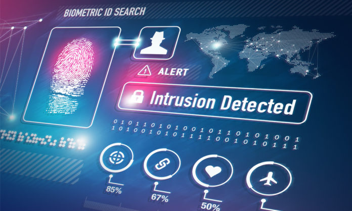

Introduction:
On September 15, 2021, it was reported that Mitsubishi Electric Corporation had suffered a cyberattack. The company confirmed that unauthorized access to its network had been detected in June of the same year, and it had since been investigating the extent of the breach.
Attack Details:
According to the company's statement, the attack was carried out by a group called Tick, which is believed to be affiliated with the Chinese government. The attackers used a technique known as "APT" or advanced persistent threat, which involves infiltrating a target network and remaining undetected for a prolonged period of time, all the while gathering sensitive information.
Potential Damage:
The extent of the damage caused by the attack is not yet clear, but it is believed that the attackers may have stolen confidential data on defense contracts, as well as on other clients and partners. Mitsubishi Electric is known to be involved in the development of cutting-edge technology for the Japanese military, including radar systems and missile components.

State-Sponsored Hacking:
The attack on Mitsubishi Electric is just one of many examples of the growing threat posed by state-sponsored hackers. Countries around the world are increasingly turning to cyber warfare as a means of gaining a strategic advantage over their rivals. This trend is particularly worrying in the case of China, which has been accused of engaging in widespread cyber espionage against both government and private targets.
Need for Cybersecurity:
The attack on Mitsubishi Electric is also a stark reminder of the need for companies to take cybersecurity seriously. Cyberattacks are no longer a rare occurrence, and businesses of all sizes are vulnerable to a wide range of threats. In the case of Mitsubishi Electric, it is possible that the company's lax security measures may have made it an easy target for the attackers.

Conclusion:
The attack on Mitsubishi Electric is a sobering reminder of the need for vigilance in the face of an ever-evolving threat landscape. Companies must take cybersecurity seriously if they are to protect their assets and maintain the trust of their stakeholders. The consequences of failing to do so can be severe, ranging from financial losses to reputational damage and even the loss of life in the case of critical infrastructure. By investing in robust security measures and cooperating with one another, we can help to ensure that our digital infrastructure remains secure and resilient in the face of an ever-evolving threat landscape.
Steps for Protection:
There are a number of steps that companies can take to protect themselves from cyber threats. These include investing in robust security systems and protocols, training employees to recognize and respond to potential threats, and regularly testing and updating their defenses. It is also important for businesses to be transparent about any breaches or attacks that do occur, as this can help to build trust with customers and partners.
Government Action:
It is also important for governments around the world to take action to combat cyber threats. This includes investing in cybersecurity research and development, as well as increasing cooperation between nations to share intelligence and coordinate responses to attacks. Only by working together can we hope to stay ahead of the constantly evolving threat of cyber warfare.